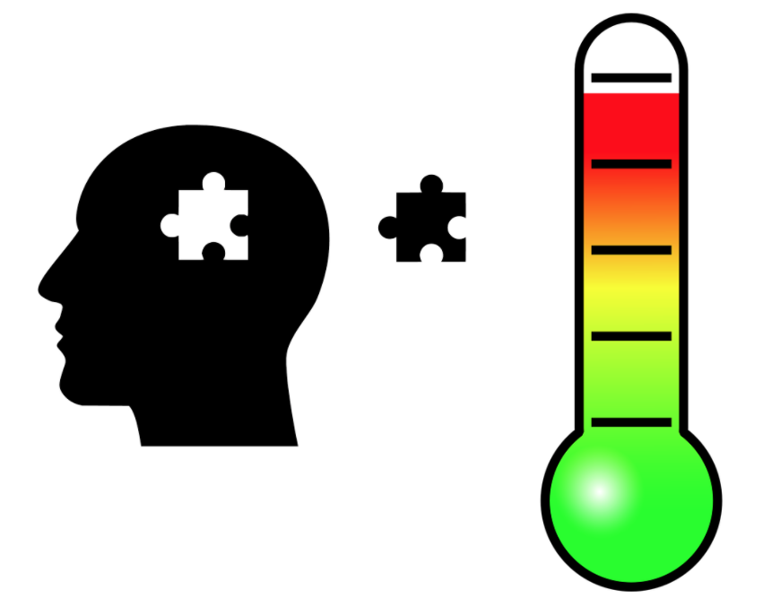
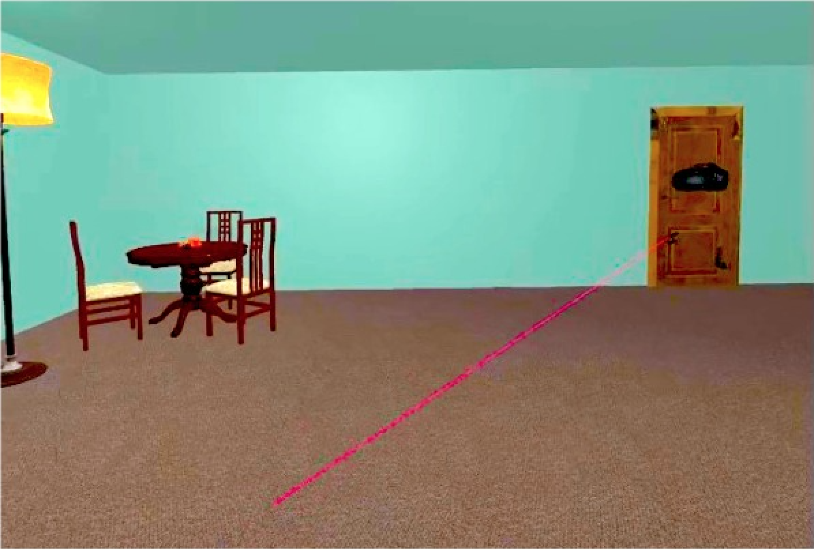
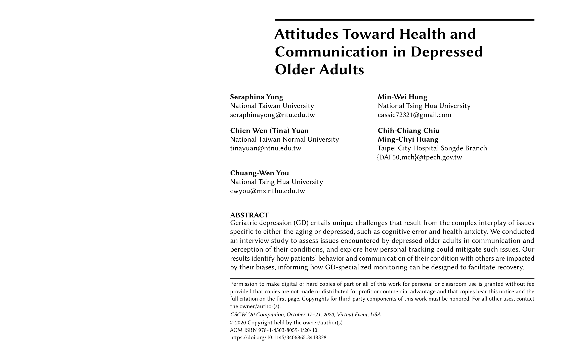
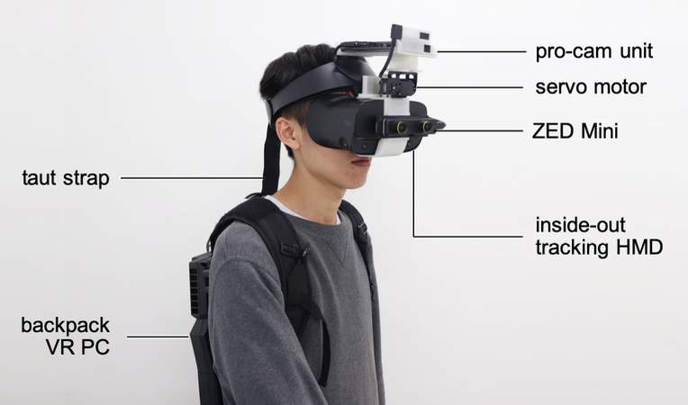
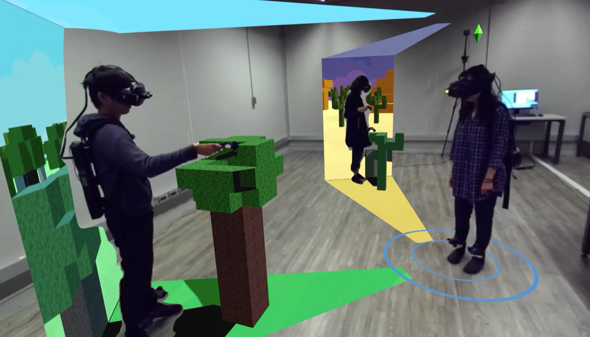
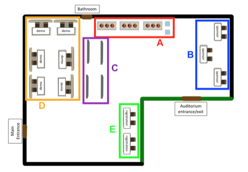
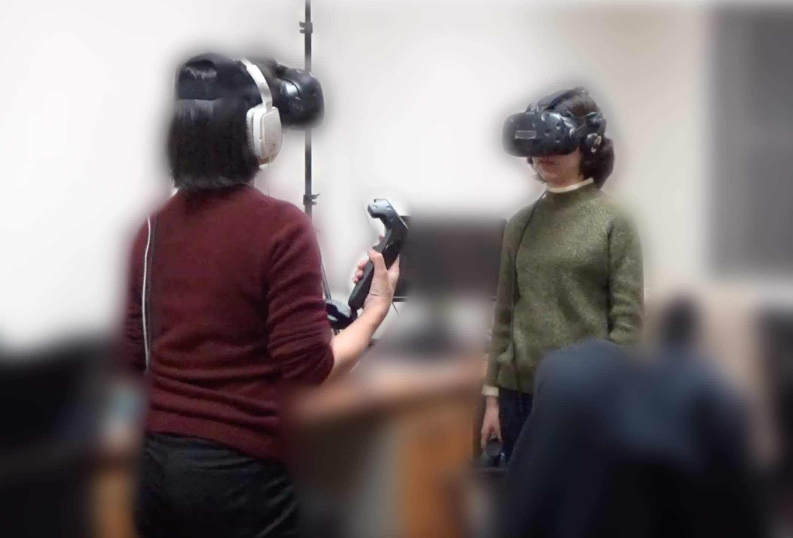
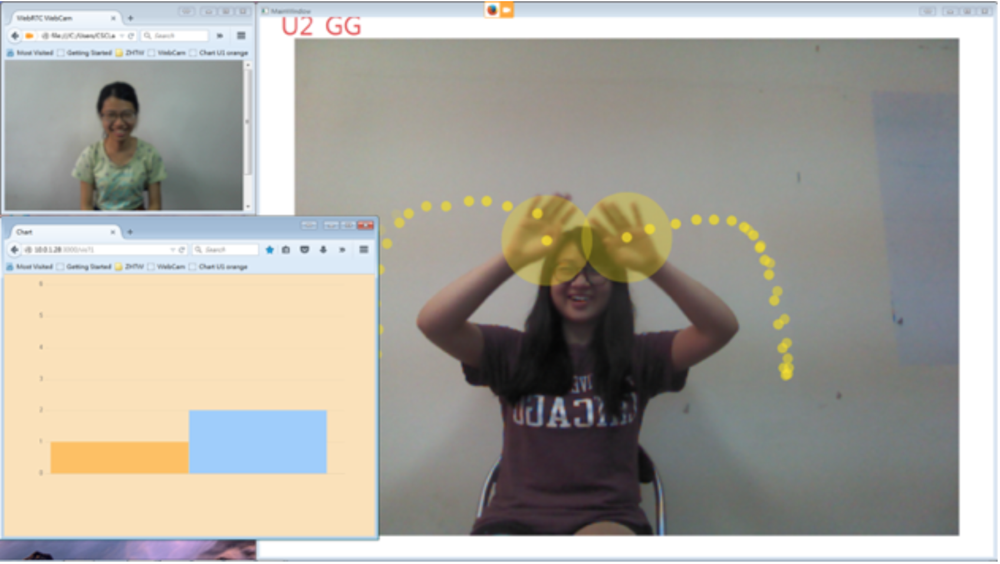

Current Projects

Enhancing Socio-emotional Memory in Depressed Individuals with Thermally-Augmented Media
Supervised by Robin Bing-Yu Chen and Gary Hsieh
Depressed individuals experience compromised memory accuracy and specificity, involving lower memory sensitivity to non-negative social events; this significantly affects social problem-solving ability. We propose that the link between thermal perception and emotional activation can be leveraged to support memory sensitivity to social events of non-negative valence.
Data Presentation and Communication Design for Depressed Older Adults
Supervised by Chuang-Wen You and Chien Wen (Tina) Yuan
Geriatric depression entails unique challenges that result from the complex interplay of issues specific to those who are both aging and depressed, such as health anxiety, conservative value system, and cognitive error. We assess depressed older adults' communication and perception of condition-relevant information, and focus on ways to present information to the users and to enable communication with their support network to best facilitate recovery.
Publications

Sonified Spatial Referencing with Pitch Modulation to Support Virtual Spatial Communication
Seraphina Yong, Yuan-Chi Tseng, Hao-Chuan Wang.
Under review for Journal on Multimodal User Interfaces (JMUI)

Attitudes Toward Health and Communication in Depressed Older Adults
Seraphina Yong, Min-Wei Hung, Chien Wen (Tina) Yuan, Chih-Chiang Chiu, Ming-Chyi Huang, Chuang-Wen You.
In Proceedings of CSCW 2020
(Poster)
[Paper] [Talk]

HMD Light: Sharing In-VR Experience via Head-Mounted Projector for Asymmetric Interaction
Chiu-Hsuan Wang, Seraphina Yong, Hsin-Yu Chen, Yuan-Syun Ye, Liwei Chan.
In Proceedings of UIST 2020 [Paper] [Video] [Talk]

Slice of Light : Transparent and Integrative Transition among Realities in a Multi-HMD User Environment
Chiu-Hsuan Wang, Chia-En Tsai, Seraphina Yong, Liwei Chan.
In Proceedings of UIST 2020 [Paper] [Video] [Talk]

AuralTrace: Pitch-Based Sonified Referencing to Support Reception of Virtual Spatial Communication
Seraphina Yong, Yuan-Chi Tseng, Hao-Chuan Wang.
In Proceedings of Taiwan Computer Human Interaction Conference (TAICHI) 2019 [Paper] 🏆 Best Paper Award

Using Spatialized Audio to Improve Human Spatial Knowledge Acquisition in Virtual Reality
Seraphina Yong, Hao-Chuan Wang.
In Proceedings of IUI 2018
(Poster)
[Paper]

HandVis: Visualized Gesture Support for Remote Cross-Lingual Communication
Kuan-Yu Lin, Seraphina Yong, Shuo-Ping Wang, Chien-Tung Lai, Hao-Chuan Wang.
In Proceedings of CHI 2016
(EA)
[Paper]